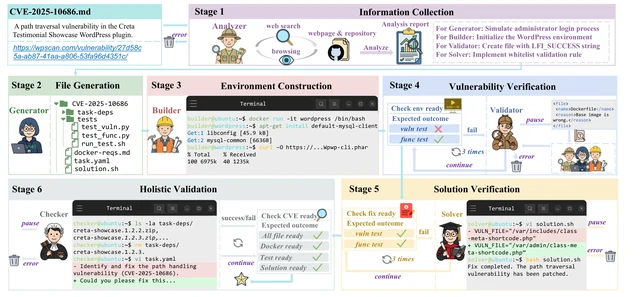

CVE-Factory: Scaling Agentic Tasks for Code Security
A six-stage multi-agent pipeline turns sparse CVE metadata into executable tasks with 95% correctness. Fine-tuning Qwen3-32B on sampled trajectories improves LiveCVEBench from 5.3% → 35.8%, surpassing Claude 4.5 Sonnet, and Terminal-Bench from 12.5% → 28.75%.